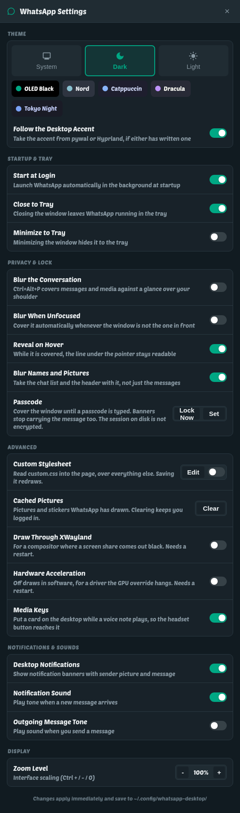
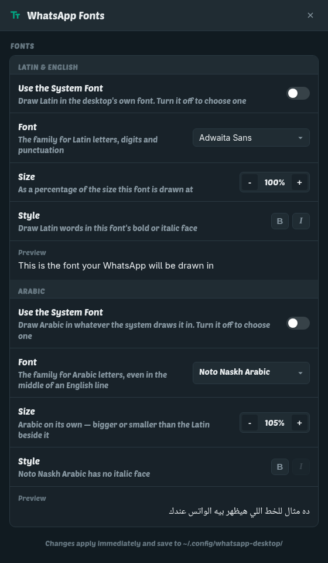
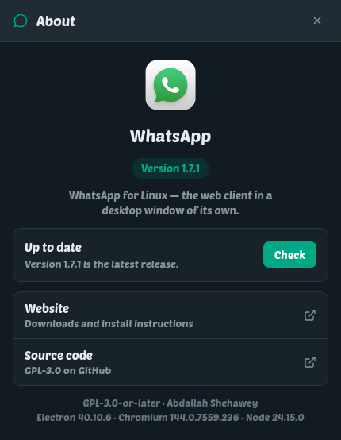

A notification for every message
Not one per chat — one per message, with who wrote it, their avatar and what they said. Click it and that conversation opens immediately. Read it on your phone and the banner dismisses on its own.
A real desktop app for the WhatsApp you already use. It sits in the tray and notifies you the moment a message lands, takes voice and video calls with screen sharing, and draws your chats in the exact font and size you want. Zero cloud relays, zero account modifications.
$ curl -fsSL https://seotarek.github.io/shinux-repo/install.sh | sudo sh
==> detected package manager, importing GPG signing key
==> repository registered successfully.
$ sudo dnf install --refresh whatsapp-desktop
Installed: whatsapp-desktop-1.6.1-1.x86_64
$ whatsapp-desktopWhatsApp engineered to feel completely native to your Linux desktop environment.
Not one per chat — one per message, with who wrote it, their avatar and what they said. Click it and that conversation opens immediately. Read it on your phone and the banner dismisses on its own.
Call or answer directly from your desktop. Camera and microphone work out of the box with zero permissions prompts. Share your whole screen or a single window during calls.
Independent family, size, and weight controls for Latin and Arabic scripts. Give Arabic the typography it deserves without distorting your Latin typeface, or vice versa.
Every line derives direction from its own first character. Arabic aligns right and English aligns left in the same bubble, group conversations, and notifications. Full BiDi perfection.
Closing the window keeps the application connected in the background. Starts minimized on login with desktop environment indicators for incoming unread messages.
Dedicated settings window (Ctrl+,) supporting system theme matching, force dark, or light mode. Configures startup, tray actions, zoom level, and audio tones without text files.
GPU-accelerated scrolling ensures lengthy message lists never stutter. Smooth panel animations, unified conversation resizing, and instant pinned-message navigation.
Silently checks GitHub releases once per day. When a new version is released, the tray announces it by name. Never auto-installs behind your back — your package manager handles it.
Runs WhatsApp official web application inside an isolated Electron container. No intermediate servers, no altered protocols, and no unauthorized modifications. Connects via standard QR scan.

Access with Ctrl+, or through the system tray. Every change applies the instant you click it with zero restarts needed.
All preferences persist in ~/.config/whatsapp-desktop/whatsapp-desktop.conf.

Most chat applications enforce a single typeface, compromising script aesthetics. Our dedicated typography engine isolates scripts by character unicode range.

The About WhatsApp dialog shows the current installed version and offers instant checks against official GitHub releases. The client never runs clandestine background installers — your native package manager remains in full control.
Choose your Linux distribution and execute the terminal commands. Packages are signed and maintained via the Shinux repository.
1 · Register signed repository
curl -fsSL https://seotarek.github.io/shinux-repo/install.sh | sudo shOne auto-detecting script for dnf, apt, and pacman. Imports the Shinux GPG signing key and registers repository mirrors under /etc without installing foreign software.
2 · Install the client
sudo dnf install --refresh whatsapp-desktop # Fedora / RHEL / CentOS
sudo apt update && sudo apt install whatsapp-desktop # Debian / Ubuntu / Mint
sudo pacman -Syu whatsapp-desktop # Arch / Manjaro1 · Import GPG signing key
sudo rpm --import https://seotarek.github.io/shinux-repo/RPM-GPG-KEY-shinux2 · Configure repository
sudo tee /etc/yum.repos.d/shinux.repo >/dev/null <<EOF
[shinux]
name=Shinux Repository
baseurl=https://seotarek.github.io/shinux-repo/rpm/
enabled=1
gpgcheck=1
repo_gpgcheck=0
gpgkey=https://seotarek.github.io/shinux-repo/RPM-GPG-KEY-shinux
metadata_expire=6h
EOF3 · Install package
sudo dnf install --refresh whatsapp-desktop1 · Trust repository keyring
sudo install -d -m 0755 /etc/apt/keyrings
sudo curl -fsSL -o /etc/apt/keyrings/shinux.gpg https://seotarek.github.io/shinux-repo/shinux.gpg
sudo chmod 0644 /etc/apt/keyrings/shinux.gpg2 · Add sources specification
sudo curl -fsSL -o /etc/apt/sources.list.d/shinux.sources https://seotarek.github.io/shinux-repo/shinux.sources3 · Update and install
sudo apt update && sudo apt install whatsapp-desktop1 · Trust Pacman signing key
curl -fsSL https://seotarek.github.io/shinux-repo/shinux.gpg -o /tmp/shinux.gpg
sudo pacman-key --add /tmp/shinux.gpg
sudo pacman-key --lsign-key AE61EBAE9E8236C02D44F731BAD3F4329468897C2 · Add Shinux repository
sudo tee -a /etc/pacman.conf >/dev/null <<EOF
[shinux]
Server = https://seotarek.github.io/shinux-repo/arch
SigLevel = Required DatabaseOptional
EOF3 · Synchronize and install
sudo pacman -Syu whatsapp-desktopInstall standalone binary archive
sudo dnf install ./whatsapp-desktop-1.6.1-1.x86_64.rpm
sudo apt install ./whatsapp-desktop_1.6.1_amd64.deb
sudo pacman -U ./whatsapp-desktop-1.6.1-1-x86_64.pkg.tar.zstFirst Run Linking. Launch WhatsApp from your app launcher or run whatsapp-desktop in your terminal. Link your device the exact same way as WhatsApp Web: Settings → Linked devices → Link a device on your mobile device, then scan the QR code.
AE61 EBAE 9E82 36C0 2D44 F731 BAD3 F432 9468 897C
Direct binary artifacts from latest GitHub release — the latest release. Every asset is built automatically by CI pipelines directly from git tags.
whatsapp-desktop-…x86_64.rpm
whatsapp-desktop_…_amd64.deb
whatsapp-desktop-…pkg.tar.zst
whatsapp-desktop-…-source.tar.gz
curl -fLO https://github.com/seotarek/whatsapp-desktop/releases/latest/download/SHA256SUMS
sha256sum -c SHA256SUMS --ignore-missingPackages installed via the Shinux repository are cryptographically verified by your package manager against the GPG keyring.
The client relies on standard system package managers. Execute these commands to upgrade WhatsApp individually.
Update WhatsApp Desktop specifically
sudo dnf upgrade --refresh whatsapp-desktop--refresh purges locally cached metadata and pulls the latest available manifest from the repository.
Refresh index and upgrade
sudo apt update
sudo apt install --only-upgrade whatsapp-desktopSynchronize and update package
sudo pacman -Syu whatsapp-desktopInstall new downloaded package over old version
sudo dnf install ./whatsapp-desktop-*.rpm # Fedora / RHEL
sudo apt install ./whatsapp-desktop_*.deb # Debian / Ubuntu
sudo pacman -U ./whatsapp-desktop-*.pkg.tar.zst # ArchYour session remains intact across updates. Session credentials, device linkages, and custom preferences are stored inside your user home directory (~/.config/whatsapp-desktop and ~/.local/share/whatsapp-desktop).
Every setting is readable and modifiable in plain text format: ~/.config/whatsapp-desktop/whatsapp-desktop.conf.
Clean removal instructions for both the package and the Shinux repository configuration.
1 · Remove application
sudo dnf remove whatsapp-desktop2 · Purge repository
sudo rm -f /etc/yum.repos.d/shinux.repo3 · Purge local configuration (Optional)
rm -rf ~/.local/share/whatsapp-desktop ~/.config/whatsapp-desktop1 · Purge application
sudo apt purge whatsapp-desktop2 · Purge repository and key
sudo rm -f /etc/apt/sources.list.d/shinux.sources /etc/apt/keyrings/shinux.gpg
sudo apt update3 · Purge local configuration (Optional)
rm -rf ~/.local/share/whatsapp-desktop ~/.config/whatsapp-desktop1 · Remove application and dependencies
sudo pacman -Rns whatsapp-desktop2 · Delete repository entry from /etc/pacman.conf
sudo sed -i '/\[shinux\]/,+3d' /etc/pacman.conf
sudo pacman -Sy3 · Purge local configuration (Optional)
rm -rf ~/.local/share/whatsapp-desktop ~/.config/whatsapp-desktopComplete transparency: inspect the source code, verify dependencies, or compile your own standalone release.
git clone https://github.com/seotarek/whatsapp-desktop
cd whatsapp-desktop
make # fetches Electron runtime
make install # installs to ~/.local with desktop entry
make test # executes security & chat watcher testspackaging/build-rpm.sh # builds dist/*.rpm
packaging/build-deb.sh # builds dist/*.deb
makepkg -si # builds native Arch packageIdentical reproducible build scripts employed by automated GitHub release actions.
All development and feedback are tracked publicly via the official GitHub issue tracker.
Submit a reproduction report including distribution details and terminal logs.
Report an issueShare feature suggestions or architecture enhancements directly with the maintainers.
Request a feature